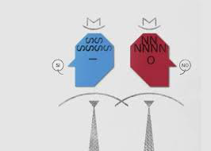

Filosofia Morre Agnes Heller, a filósofa da vida cotidiana que sobreviveu ao Holocausto Filosofia Como a atividade dos neurônios produz essa sensação única de estar vivo e consciente? Filosofia O feminismo que nasceu com Simone de Beauvoir Filosofia Como mudar o sistema educativo para transformar o mundo  Filosofia Peter Sloterdijk: “A vida atual não convida a pensar”